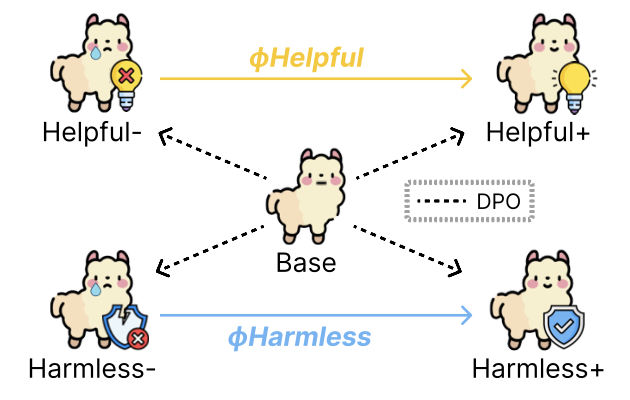
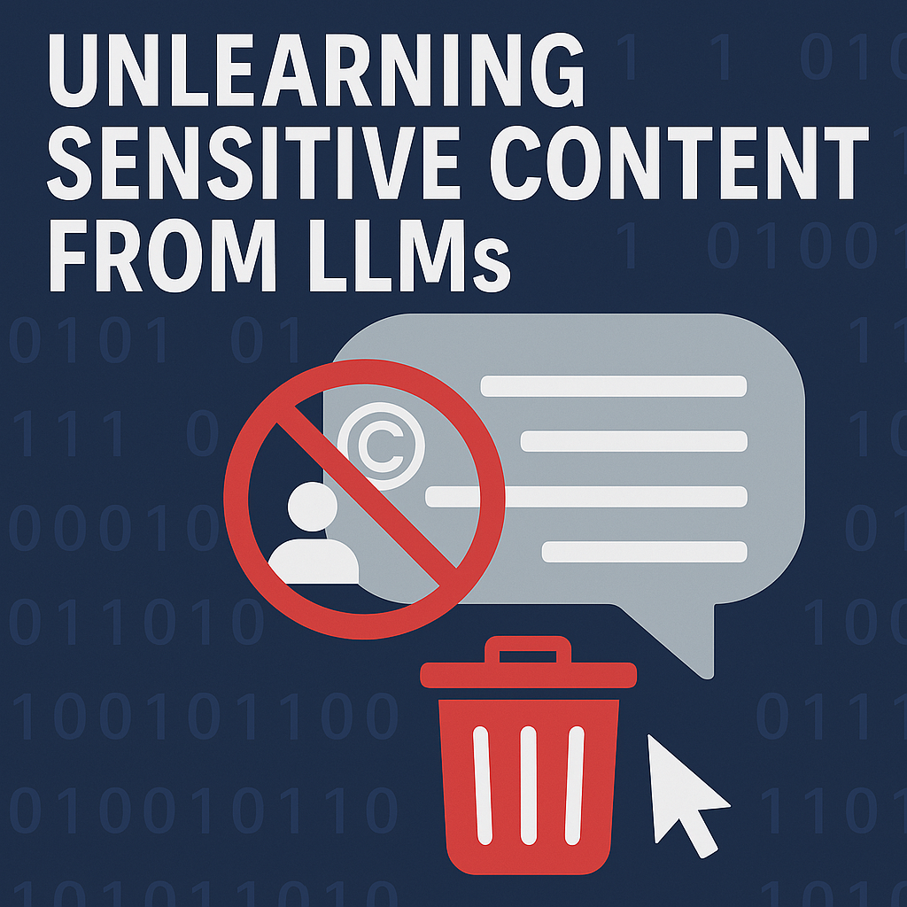
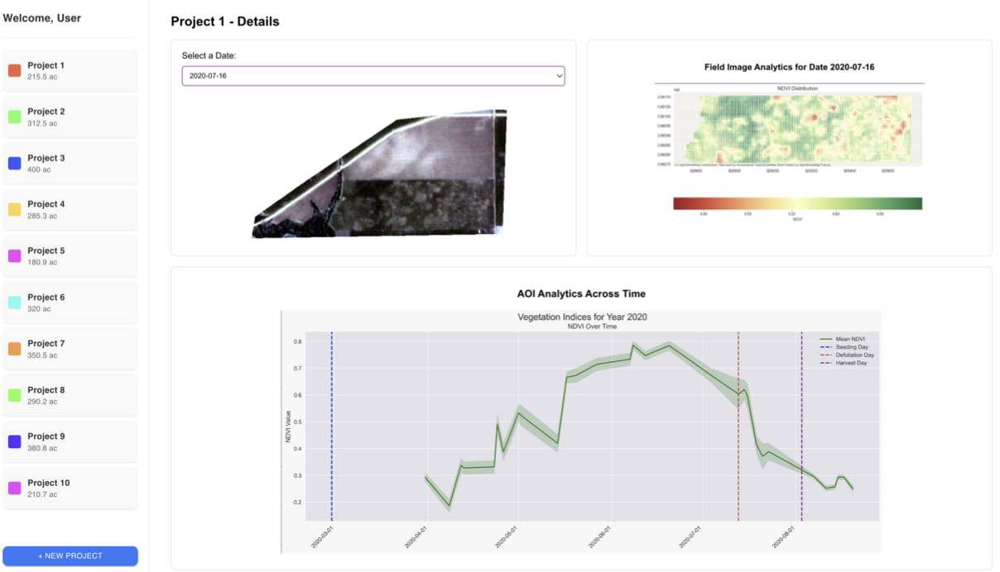
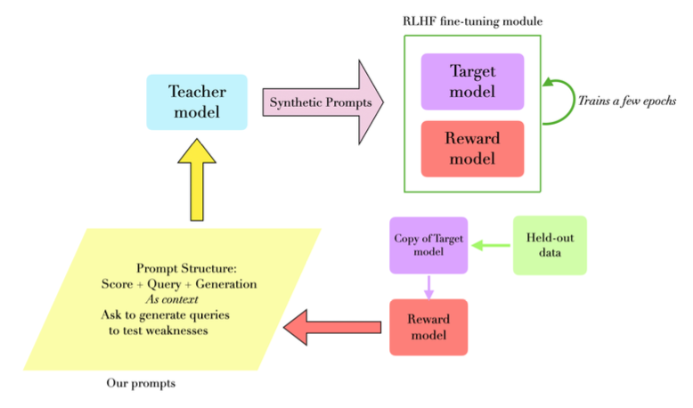
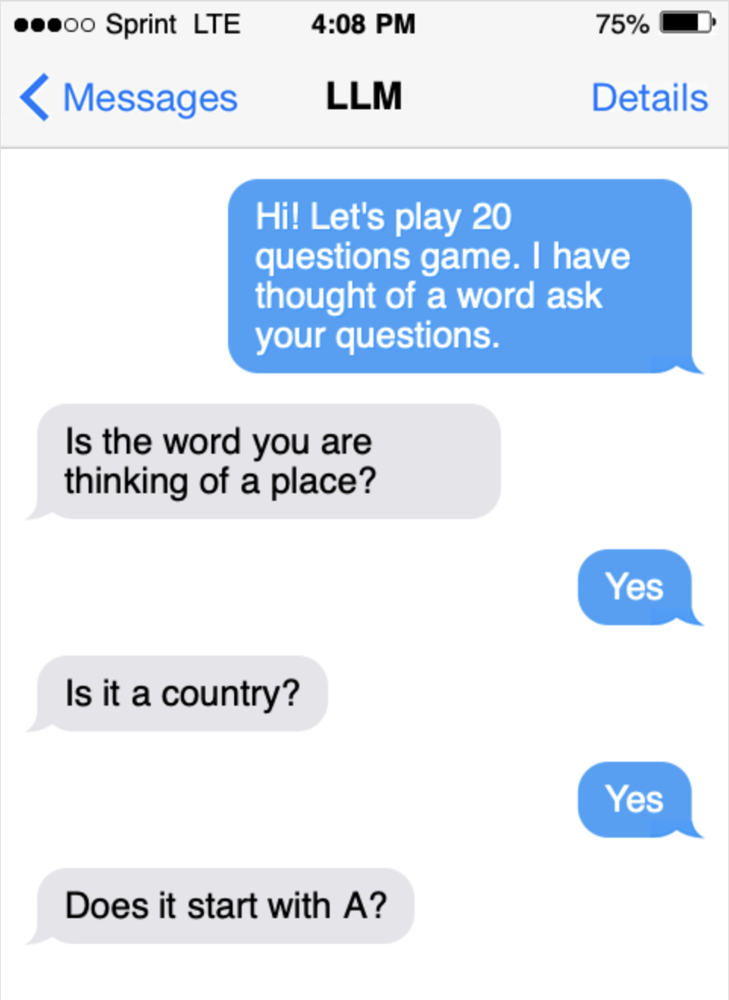
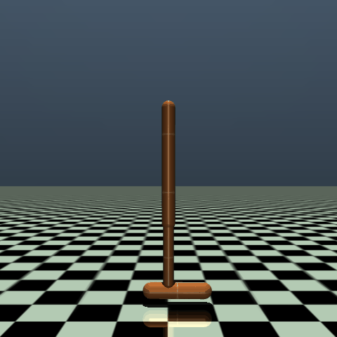

Projects
Adaptive Helpfulness–Harmlessness Alignment via Preference Vectors - submitted to COLM '25

Developed a novel "Preference Vector" framework to address limitations in existing LLM alignment techniques (RLHF/DPO). Instead of a single optimization, this method trains separate models on individual preferences (e.g., helpfulness, harmlessness), extracts behavioral shifts as vectors using task arithmetic principles, and dynamically merges them at inference. This enables fine-grained, controllable preference balancing without full model retraining.
- Key Contributions: Designed and implemented the Preference Vector pipeline; trained Llama3 (8B, 3B) and Mistral-7B models using DPO; conducted robustness experiments using multiple seeds and vector analysis.
- Impact: Outperformed standard Safe-RLHF baselines, enabling smooth control over trade-offs and scalable multi-preference alignment with lower computational cost.
- Tech Stack: PyTorch, Transformers, DPO, DeepSpeed (Multi-Node/Multi-GPU), Task Arithmetic, LLM Alignment Techniques.
Selective Amnesia in LLMs via Knowledge Isolation - SemEval @ACL '25

Developed a novel two-stage methodology for targeted unlearning in LLMs to address the challenge of removing sensitive information without degrading overall capabilities. Combined causal mediation analysis to identify knowledge localization (specifically MLP modules in layers 0-5 of OLMo) with layer-specific constrained optimization using a joint loss function.
- Key Contributions: Conducted causal tracing experiments; designed the constrained optimization strategy and joint loss function; fine-tuned OLMo (1B, 7B) models.
- Impact: Achieved 2nd place in the SemEval-2025 Task 4 (1B track) with a high aggregate score (0.973) and minimal impact on general knowledge (retaining 88% MMLU accuracy). Demonstrated effective unlearning while highlighting scalability considerations for larger models.
- Tech Stack: PyTorch, Transformers (OLMo), Causal Inference, Constrained Optimization, LLM Fine-tuning, Machine Unlearning.

Satellite-based Crop Monitoring System (SCMS)

Designed and developed a web-based platform for monitoring crop health and predicting yields using satellite imagery. Implemented a secure and scalable microservice architecture using Docker and FastAPI, with a central Job Runner orchestrating backend tasks (image fetching, processing, ML inference).
- Key Contributions: Designed the overall System Architecture, database schemas (PostgreSQL/MongoDB), and REST APIs (FastAPI with OpenAPI documentation); Implemented microservices for data processing (QGIS) and ML model serving; Fine-tuned ViT & Satlas models for crop yield prediction.
- Impact: Created a functional platform enabling real-time monitoring, vegetation index analysis (NDVI/GCI), yield prediction, and multi-farm management. Presented at the Agronomy Society of America 2024.
- Tech Stack: Python, FastAPI, Docker, Microservices, PostgreSQL, MongoDB, QGIS, PyTorch/TensorFlow, Computer Vision (ViT, Satlas), Scikit-learn, REST APIs, System Design.
Always-On-Policy Prompts for Efficient RLHF

Addressed inefficiencies in standard RLHF pipelines caused by static prompts. Developed an "Always-On-Policy" (AOP) approach where training prompts are dynamically generated based on the model's intermediate performance during a PPO-based training process. This focuses human feedback/synthetic data generation on areas needing the most improvement.
- Key Contributions: Designed the dynamic prompt generation system; implemented and evaluated AOP against standard RLHF and Starts-On-Policy (SOP) baselines using equivalent compute budgets.
- Impact: AOP significantly outperformed baseline models, demonstrating faster and more targeted LLM alignment, particularly for complex mathematical reasoning tasks using Gemma 2 and Llama 3.3 models.
- Tech Stack: PyTorch, Transformers, RLHF, PPO, Prompt Engineering, LLM Fine-tuning & Evaluation.
LLM Plays 20 Questions via Reinforcement Learning

Trained a Llama 3 8B model to play the 20 Questions game using Reinforcement Learning. Developed a custom game environment and utilized Proximal Policy Optimization (PPO) with Low-Rank Adaptation (LoRA) for efficient fine-tuning. The agent learned to ask strategic yes/no questions and make guesses about places, landmarks, or countries.
- Key Contributions: Built the custom RL environment; implemented the PPO training loop with LoRA; designed the reward function to encourage efficient questioning and accurate guessing; generated initial instruction dataset using Gemma 2 / Llama 3.1.
- Impact: Successfully trained an LLM agent capable of playing 20 Questions at an expert level through RL.
- Tech Stack: PyTorch, Transformers (Llama 3), RL (PPO), LoRA, OpenAI Gym-like Custom Environment, Reward Shaping.
Reward Extrapolation from Trajectories using PPO and SAC

Explored Inverse Reinforcement Learning by adapting the Trajectory Rank-Based Reward Extrapolation (T-REX) algorithm. Instead of the original PPO, Soft Actor-Critic (SAC) was used to learn a policy based on a reward function inferred purely from observing expert (PPO) trajectories in OpenAI Gym environments.
- Key Contributions: Implemented the T-REX reward learning mechanism; trained SAC agents using the learned reward function; benchmarked performance against the original expert PPO policy.
- Impact: Demonstrated that the SAC agent trained on the extrapolated reward function could surpass the performance of the original PPO expert from whose trajectories the reward was learned.
- Tech Stack: Python, PyTorch/TensorFlow, OpenAI Gymnasium, Reinforcement Learning (PPO, SAC), Inverse Reinforcement Learning (T-REX).